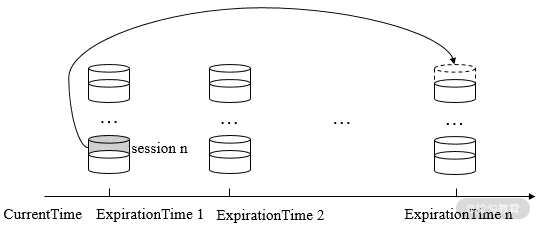
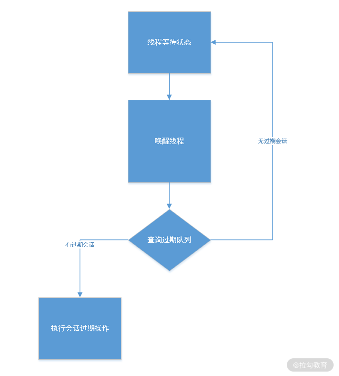

- 00 开篇词：选择 ZooKeeper，一步到位掌握分布式开发.md
- 01 ZooKeeper 数据模型：节点的特性与应用.md
- 02 发布订阅模式：如何使用 Watch 机制实现分布式通知.md
- 03 ACL 权限控制：如何避免未经授权的访问？.md
- 04 ZooKeeper 如何进行序列化？.md
- 05 深入分析 Jute 的底层实现原理.md
- 06 ZooKeeper 的网络通信协议详解.md
- 07 单机模式：服务器如何从初始化到对外提供服务？.md
- 08 集群模式：服务器如何从初始化到对外提供服务？.md
- 09 创建会话：避开日常开发的那些“坑”.md
- 10 ClientCnxn：客户端核心工作类工作原理解析.md
- 11 分桶策略：如何实现高效的会话管理？.md
- 12 服务端是如何处理一次会话请求的？.md
- 13 Curator：如何降低 ZooKeeper 使用的复杂性？.md
- 14 Leader 选举：如何保证分布式数据的一致性？.md
- 15 ZooKeeper 究竟是怎么选中 Leader 的？.md
- 16 ZooKeeper 集群中 Leader 与 Follower 的数据同步策略.md
- 17 集群中 Leader 的作用：事务的请求处理与调度分析.md
- 18 集群中 Follow 的作用：非事务请求的处理与 Leader 的选举分析.md
- 19 Observer 的作用与 Follow 有哪些不同？.md
- 20 一个运行中的 ZooKeeper 服务会产生哪些数据和文件？.md
- 21 ZooKeeper 分布式锁：实现和原理解析.md
- 22 基于 ZooKeeper 命名服务的应用：分布式 ID 生成器.md
- 23 使用 ZooKeeper 实现负载均衡服务器功能.md
- 24 ZooKeeper 在 Kafka 和 Dubbo 中的工业级实现案例分析.md
- 25 如何搭建一个高可用的 ZooKeeper 生产环境？.md
- 26 JConsole 与四字母命令：如何监控服务器上 ZooKeeper 的运行状态？.md
- 27 crontab 与 PurgeTxnLog：线上系统日志清理的最佳时间和方式.md
- 28 彻底掌握二阶段提交三阶段提交算法原理.md
- 29 ZAB 协议算法：崩溃恢复和消息广播.md
- 30 ZAB 与 Paxos 算法的联系与区别.md
- 31 ZooKeeper 中二阶段提交算法的实现分析.md
- 32 ZooKeeper 数据存储底层实现解析.md
- 33 结束语 分布技术发展与 ZooKeeper 应用前景.md
11 分桶策略：如何实现高效的会话管理？
前几个课时我们一直围绕会话这个主题进行讲解，今天这节课我们依然还要学习会话的相关知识，本节课我们从 ZooKeeper 会话管理的角度来深入探索一下 ZooKeeper 会话管理的方式。
我们知道 ZooKeeper 作为分布式系统的核心组件，在一个分布式系统运行环境中经常要处理大量的会话请求，而 ZooKeeper 之所以能够快速响应客户端操作，这与它自身的会话管理策略密不可分。
会话管理策略
通过前面的学习，我们知道在 ZooKeeper 中为了保证一个会话的存活状态，客户端需要向服务器周期性地发送心跳信息。而客户端所发送的心跳信息可以是一个 ping 请求，也可以是一个普通的业务请求。ZooKeeper 服务端接收请求后，会更新会话的过期时间，来保证会话的存活状态。从中也能看出，在 ZooKeeper 的会话管理中，最主要的工作就是管理会话的过期时间。
ZooKeeper 中采用了独特的会话管理方式来管理会话的过期时间，网络上也给这种方式起了一个比较形象的名字：“分桶策略”。我将结合下图给你讲解“分桶策略”的原理。如下图所示，在 ZooKeeper 中，会话将按照不同的时间间隔进行划分，超时时间相近的会话将被放在同一个间隔区间中，这种方式避免了 ZooKeeper 对每一个会话进行检查，而是采用分批次的方式管理会话。这就降低了会话管理的难度，因为每次小批量的处理会话过期也提高了会话处理的效率。

通过上面的介绍，我们对 ZooKeeper 中的会话管理策略有了一个比较形象的理解。而为了能够在日常开发中使用好 ZooKeeper，面对高并发的客户端请求能够开发出更加高效稳定的服务，根据服务器日志判断客户端与服务端的会话异常等。下面我们从技术角度去说明 ZooKeeper 会话管理的策略，进一步加强对会话管理的理解。
底层实现
说到 ZooKeeper 底层实现的原理，核心的一点就是过期队列这个数据结构。所有会话过期的相关操作都是围绕这个队列进行的。可以说 ZooKeeper 底层就是采用这个队列结构来管理会话过期的。
而在讲解会话过期队列之前，我们首先要知道什么是 bucket。简单来说，一个会话过期队列是由若干个 bucket 组成的。而 bucket 是一个按照时间划分的区间。在 ZooKeeper 中，通常以 expirationInterval 为单位进行时间区间的划分，它是 ZooKeeper 分桶策略中用于划分时间区间的最小单位。
在 ZooKeeper 中，一个过期队列由不同的 bucket 组成。每个 bucket 中存放了在某一时间内过期的会话。将会话按照不同的过期时间段分别维护到过期队列之后，在 ZooKeeper 服务运行的过程中，具体的执行过程如下图所示。首先，ZooKeeper 服务会开启一个线程专门用来检索过期队列，找出要过期的 bucket，而 ZooKeeper 每次只会让一个 bucket 的会话过期，每当要进行会话过期操作时，ZooKeeper 会唤醒一个处于休眠状态的线程进行会话过期操作，之后会按照上面介绍的操作检索过期队列，取出过期的会话后会执行过期操作。

下面我们再来看一下 ZooKeeper 底层代码是如何实现会话过期队列的，在 ZooKeeper 底层中，使用 ExpiryQueue 类来实现一个会话过期策略。如下面的代码所示，在 ExpiryQueue 类中具有一个 elemMap 属性字段。它是一个线程安全的 HaspMap 列表，用来根据不同的过期时间区间存储会话。而 ExpiryQueue 类中也实现了诸如 remove 删除、update 更新以及 poll 等队列的常规操作方法。
public class ExpiryQueue<E> {
private final ConcurrentHashMap<E, Long> elemMap;
public Long remove(E elem) {...}
public Long update(E elem, int timeout) {...}
public Set<E> poll() {...}
}
通过 ExpiryQueue 类实现一个用于管理 ZooKeeper 会话的过期队列之后，ZooKeeper 会将所有会话都加入 ExpiryQueue 列表中进行管理。接下来最主要的工作就是何时去检查该列表中的会话，并取出其中的过期会话进行操作了。一般来说，当一个会话即将过期时，就要对列表进行操作。而一个会话的过期时间 = 系统创建会话的时间 + 会话超时时间。而每个会话的创建时间又各不相同，ZooKeeper 服务没有时刻去监控每一个会话是否过期。而是通过 roundToNextInterval 函数将会话过期时间转化成心跳时间的整数倍，根据不同的过期时间段管理会话。
private long roundToNextInterval(long time) {
return (time / expirationInterval + 1) * expirationInterval;
}
如上面的代码所示，roundToNextInterval 函数的主要作用就是以向上取正的方式计算出每个会话的时间间隔，当会话的过期时间发生更新时，会根据函数计算的结果来决定它属于哪一个时间间隔。计算时间间隔公式是（time / ExpirationInterval + 1） ExpirationInterval，比如我们取 expirationInterval 的值为 2，会话的超时 time 为10，那么最终我们计算的 bucket 时间区间就是 12。
现在我们已经介绍了 ZooKeeper 会话管理的所有前期准备工作，当 ZooKeeper 服务进行会话超时检查的时候，会调用 SessionTrackerImpl 类专门负责此工作。在前面的课程中，我们介绍过 SessionTrackerImpl 是一个线程类。如下面的代码所示，在 run 方法中会首先获取会话过期的下一个时间点，之后通过 setSessionClosing 函数设置会话的关闭状态。最后调用 expire 方法进行会话清理工作。
public void run() {
try {
while (running) {
long waitTime = sessionExpiryQueue.getWaitTime();
if (waitTime > 0) {
Thread.sleep(waitTime);
continue;
}
for (SessionImpl s : sessionExpiryQueue.poll()) {
setSessionClosing(s.sessionId);
expirer.expire(s);
}
}
...
}
接下来我们再深入到 expire 方法内部来看看 ZooKeeper 一次会话管理中的最后一步：会话的过期清理工作。 如下面的代码所示，在 expire 函数的内部，主要工作就是发起一次会话过期的请求操作。首先通过 close 函数向整个 ZooKeeper 服务器发起一次会话过期的请求操作。接收到请求后，ZooKeeper 就会执行诸如删除该会话的临时节点、发起 Watch 通知等操作。
private void close(long sessionId) {
Request si = new Request(null,sessionId,0,OpCode.closeSession, null, null);
setLocalSessionFlag(si);
submitRequest(si);
}
在完成了上面的会话相关操作后， ZooKeeper 最终会将过期会话从 SessionTracker 中删除最后关闭该条会话的连接。
总结
本课时我们学习了 ZooKeeper 会话中一个最重要的知识点，即会话管理策略。通过本节课的学习，我们知道了 ZooKeeper 在管理会话过期时，采用过期队列这种数据结构来管理会话，在 ZooKeeper 服务的运行过程中，通过唤醒一个线程来在过期队列中查询要过期的会话，并进行过期操作。经过本节课的学习后，我们再回头想一想，ZooKeeper 这种会话管理的好处，在实际生产中为什么它能提高服务的效率？
答案是 ZooKeeper 这种分段的会话管理策略大大提高了计算会话过期的效率，如果是在一个实际生产环境中，一个大型的分布式系统往往具有很高的访问量。而 ZooKeeper 作为其中的组件，对外提供服务往往要承担数千个客户端的访问，这其中就要对这几千个会话进行管理。在这种场景下，要想通过对每一个会话进行管理和检查并不合适，所以采用将同一个时间段的会话进行统一管理，这样就大大提高了服务的运行效率。
© 2019 - 2023 Liangliang Lee. Powered by gin and hexo-theme-book.